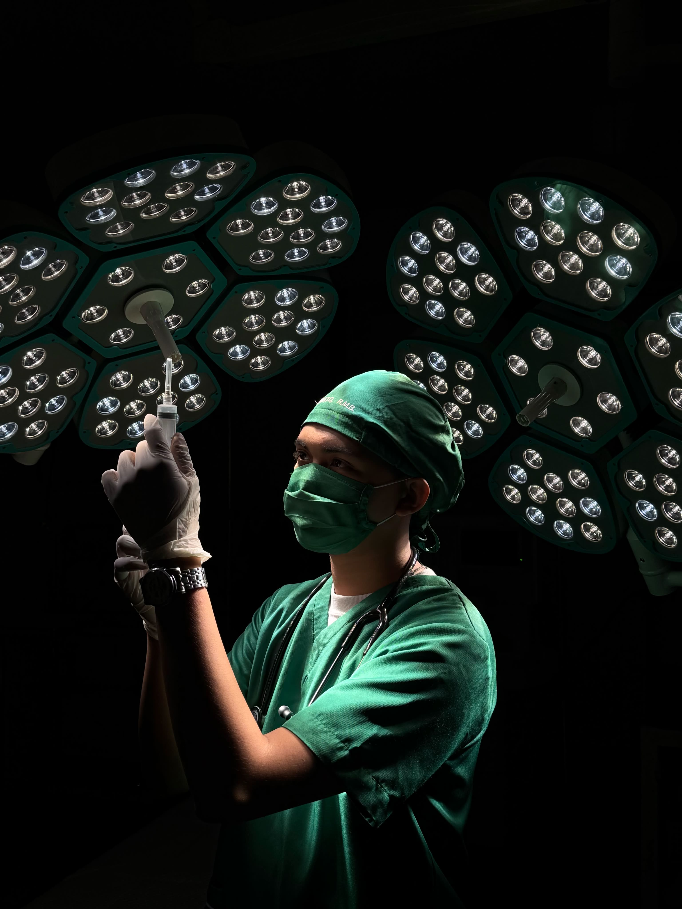

Welcome to my Realm!
Rock Michael B. Augusto
Bachelor of Science in Nursing
MSU-IIT
Hello, I’m Rock Michael B. Augusto. I’m a 21-year-old BS Nursing student from Lugait, Misamis Oriental, and the youngest in my family. As I continue my journey toward becoming a nurse, I’m learning not only about healthcare but also about responsibility, compassion, and resilience.
Outside of nursing, I’m a huge fan of Marvel, and my favorite character is Loki, the God of Stories. His journey of change, identity, and finding his own purpose is something I find inspiring.
Welcome to my portfolio—a small collection of my journey, experiences, and growth as a student nurse.
ENTER MY REALM VIEW MY RESUME
ABOUT ME
Get to know me beyond nursing. This section contains some personal information about who I am, where I come from, my interests, and the things that make me who I am.
Read moreMY JOURNEY
A glimpse into my educational and work journey as a student nurse—from my early school years to my current experiences, clinical duties, and the lessons that continue to shape me as a future nurse.
Read moreMY SKILLS
A collection of the skills I have developed through school, nursing experiences, and everyday life. These include both practical skills and personal qualities that help me face challenges and work with others.
Read moreMY ACHIEVEMENTS
A collection of the skills I have developed through school, nursing experiences, and everyday life. These include both practical skills and personal qualities that help me face challenges and work with others.
Read more